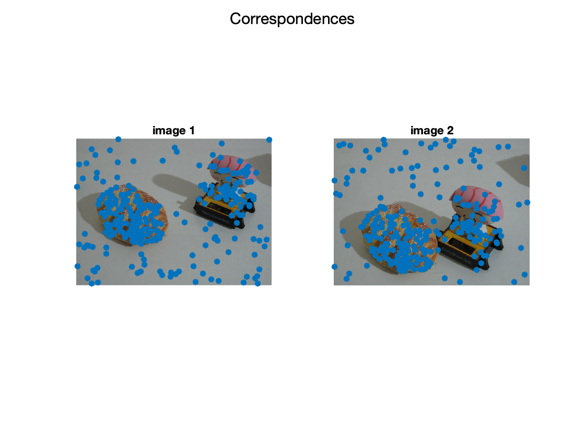
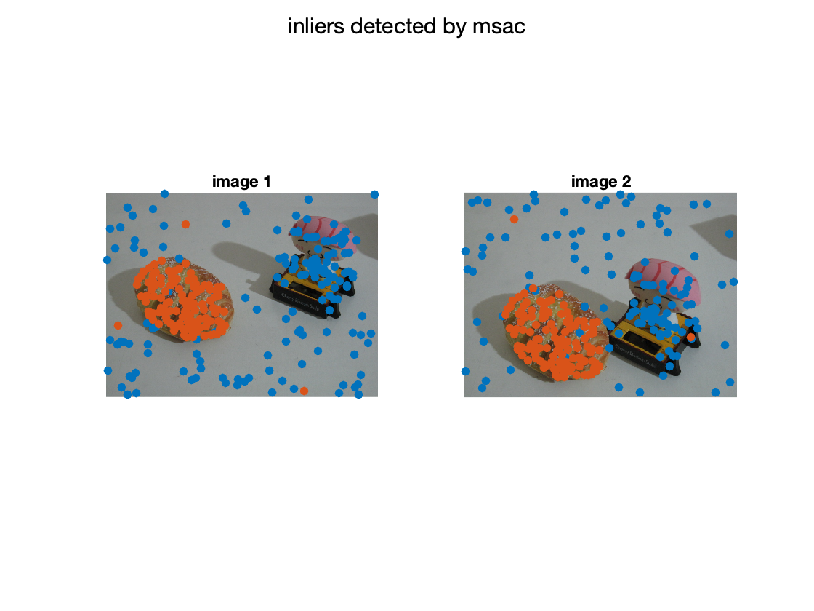
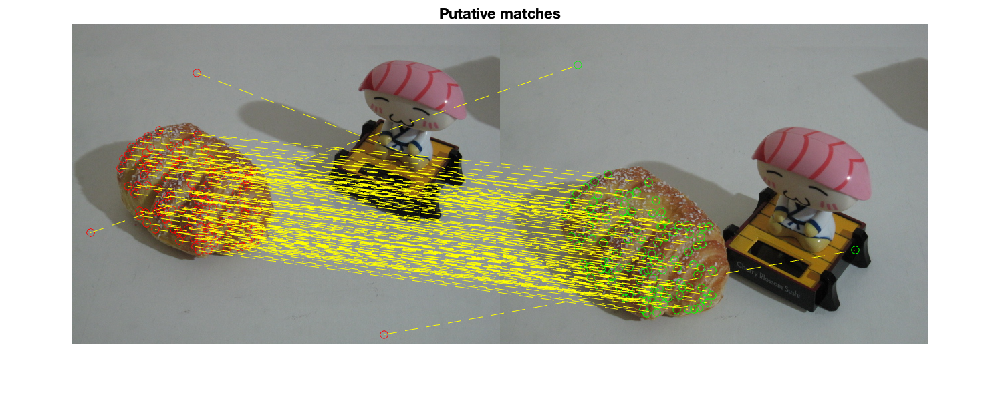
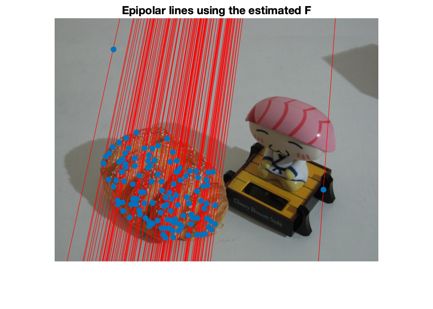
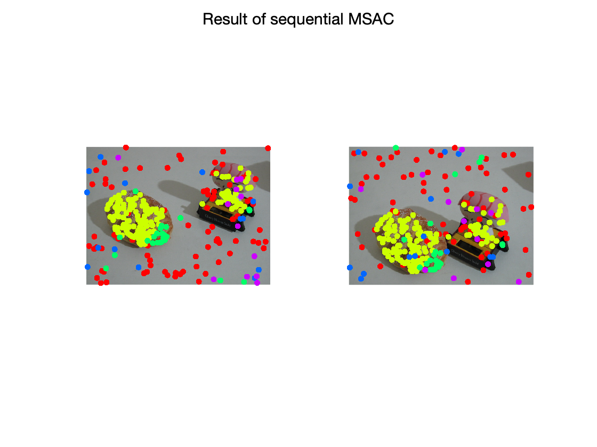

Contents
% this script demonstrates the use of sequential RanSaC to fit multiple % fundamental matrices % IACV 2020 Luca Magri % Politecnico di Milano addpath('model_spec'); %addpath(genpath('/Users/lucamagri/Activities/Develop/Codes/tslnk')); close all; clear variables;
load data
temp = load('breadtoy.mat');
img1 = temp.img1;
img2 = temp.img2;
G = temp.label(:);
X = temp.data;
show input data
figure; subplot(1,2,1); imshow(img1); hold on; scatter(X(1,:),X(2,:),'filled'); title('image 1') subplot(1,2,2); imshow(img2); hold on; scatter(X(4,:),X(5,:),'filled'); title('image 2'); sgtitle('Correspondences');
perform MSAC to estimate a fundamental matrix
modelfit = @fit_fm; % specify the function to fit a fundamental matrix modeldist = @res_fm; % specify the function to compute the sampson distance between matches and fundamental matrix p = 8; % size of the minimum sample set t = 5; % inlier threhsold % naive implementation of simpleMSAC (uncomment to play with it) %[inliers, F] = simpleMSAC(X,modelfit, modeldist, p, t); %F = fit_fm(X(:,inliers)); %inliers = res_fm(F,X)<t; [F,inliers] = estimateFundamentalMatrix(X(1:2,:)',X(4:5,:)','Method','MSAC','DistanceType','sampson','DistanceThreshold',t,'NumTrials',5000);
display the result
figure; subplot(1,2,1); imshow(img1); hold all; scatter(X(1,:),X(2,:),'filled'); scatter(X(1,inliers),X(2,inliers),'filled'); title('image 1') subplot(1,2,2); imshow(img2); hold all; scatter(X(4,:),X(5,:),'filled'); scatter(X(4,inliers),X(5,inliers),'filled'); title('image 2'); sgtitle('inliers detected by msac'); % display matched inliers figure; showMatchedFeatures(img1,img2,X(1:2,inliers)',X(4:5,inliers)','montage','PlotOptions',{'ro','go','y--'}); title('Putative matches'); % display the epipolar lines in the second image % inlers should be close to their corresponding epipolar line epiLines = epipolarLine(F,X(1:2,inliers)'); points = lineToBorderPoints(epiLines,size(img2)); figure; imshow(img2); hold all; line(points(:,[1,3])',points(:,[2,4])','Color','red'); scatter(X(4,inliers),X(5,inliers),'filled'); title('Epipolar lines using the estimated F');  
apply sequential MSAC
iteratively fit a fundamental matrix and extract inliers
Y = X; C = zeros(size(X,2),1); cont = 1; minNumPoints = 100; while(size(Y,2)>minNumPoints) [F,inliers] = estimateFundamentalMatrix(Y(1:2,:)',Y(4:5,:)','Method','MSAC','DistanceType','sampson','DistanceThreshold',t,'NumTrials',5000); C(C==0) = cont*inliers; Y(:,inliers) =[]; % remove found inliers cont = cont+1; end
Warning: Maximum number of trials reached. Consider increasing the maximum distance or decreasing the desired confidence. Warning: Maximum number of trials reached. Consider increasing the maximum distance or decreasing the desired confidence. Warning: Maximum number of trials reached. Consider increasing the maximum distance or decreasing the desired confidence.
show the results
color-coded inliers of different fundamental matrices
figure; subplot(1,2,1); imshow(img1); hold on; gscatter(X(1,:),X(2,:),C); legend off; subplot(1,2,2); imshow(img2); hold all; gscatter(X(4,:),X(5,:),C); legend off; sgtitle('Result of sequential MSAC')